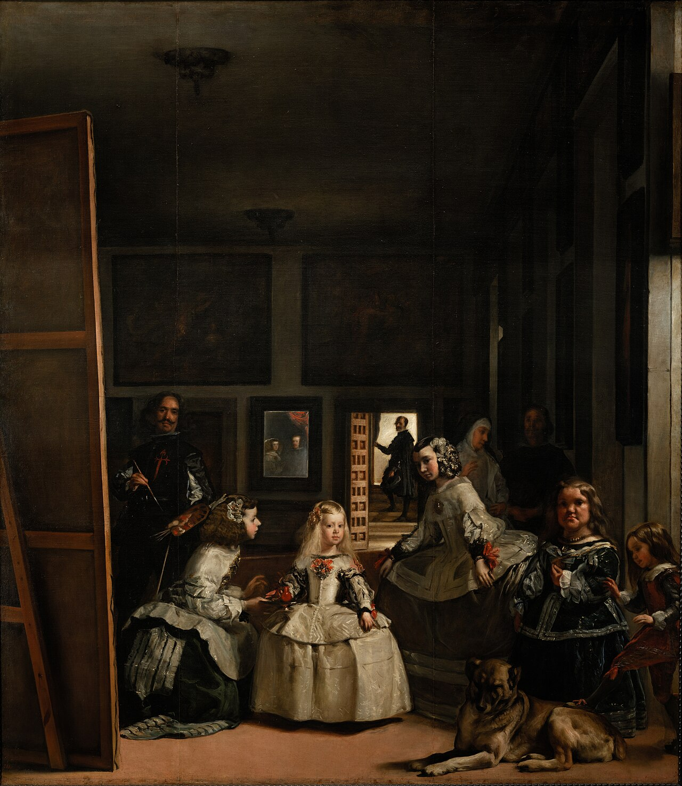

L'Opera e la Scena
Dipinto nel 1656 nel Real Alcázar di Madrid, Las Meninas ("Le Damigelle d'onore") è considerato il vertice assoluto dell'arte barocca spagnola e una delle opere più influenti dell'intera pittura occidentale. All'apparenza, la tela rappresenta una scena di vita quotidiana all'interno della corte di re Filippo IV di Spagna: al centro svetta la piccola infanta Margherita Teresa, di soli cinque anni, circondata dal suo seguito personale.
Accanto alla principessa troviamo due damigelle d'onore (Doña Isabel de Velasco e Doña María Agustina Sarmiento, che le offre da bere da un piccolo vaso di terracotta), i due nani di corte (Mari Bárbola e Nicolás Pertusato, intenti a stuzzicare un grosso mastino addormentato), una dama di compagnia in abito da lutto e una guardia del corpo. Sullo sfondo, sulla soglia della porta illuminata, appare la silhouette di José Nieto, il maresciallo di palazzo.
Il Grande Inganno Prospettico
Ciò che trasforma questo dipinto in un rompicapo intellettuale è la presenza di Diego Velázquez stesso, raffigurato a sinistra con la tavolozza e i pennelli in mano, ritratto di fronte a una tela monumentale di cui vediamo soltanto il telaio posteriore. Il pittore non sta guardando ciò che dipinge sulla tela, ma fissa direttamente noi che stiamo osservando l'opera.
Questo crea un cortocircuito visivo unico: qual è il vero soggetto del quadro su cui Velázquez sta lavorando?
Il Mistero dello Specchio
La risposta risiede nello specchio appeso sulla parete di fondo, proprio al centro della composizione. All'interno della sua cornice riflettente compaiono due volti: il Re Filippo IV e sua moglie Marianna d'Austria.
Lo specchio svela che i sovrani si trovano esattamente nello stesso punto spaziale occupato da noi che guardiamo il quadro. Velázquez sta quindi dipingendo il ritratto dei Reali che stanno posando di fronte a lui, mentre l'infanta e il suo seguito sono entrati nella stanza per assistere alla seduta.
Filosofia e Sovversione dell'Arte
Con Las Meninas, Velázquez compie una rivoluzione senza precedenti: abbatte la quarta parete e trasforma lo spettatore da semplice osservatore passivo a protagonista attivo dell'opera. Venendo collocati nella posizione occupata dai sovrani di Spagna, chi guarda il dipinto diventa il punto focale attorno a cui ruotano tutti gli sguardi dei personaggi.
Non a caso, filosofi come Michel Foucault e storici dell'arte di ogni epoca hanno definito quest'opera come "la teologia della pittura": un'osservazione sulla natura stessa della rappresentazione, sulla percezione visiva e sulla figura dell'artista all'interno della società dell'epoca.